To appreciate Celtic art, we must free ourselves of standard conventions and paradigms traditionally used to classify and dissect art. Art was not a separate specialty to the Celts, not differentiated from the mainstream of life, to be revered as High Art. Every thing, however mundane, was ornamented and embellished and used in day-to-day life.
Artifacts should be assessed and appreciated in the correct context. It is difficult for us to imagine the context in which the Celts saw and understood their artifacts. Even concepts such as "value" and "potency" are strongly biased by culture. What may seem to us to be a crudely-carved figure, an ancient Celt might find awesome and wondrous because of its symbolism, regardless of the level of skill.
To determine the precise meaning of symbols and motifs in ancient art is difficult. While we can detect patterns of use and association, we cannot with certainty interpret symbols or respond to them the same way as these people did. The symbolism may become further obscured by our difficulty in recognising an object in an abstract Celtic design.
The Celts had much exposure to the art of Greece, Rome, Etruria and other peoples, and undoubtedly synthesised elements from these sources. Yet they stubbornly retained a unique and distinctive style, and only assimilated foreign elements if they could be transformed in a manner compatible with their existing art. Celtic artists were guided by the culture's internal forces and artistic vision, and were not merely crude craftsmen adapting to exposure to the High Art of the Classical world.
Most Celtic art is highly abstract and stylised. Many times the artist would extract and exaggerate the most salient or important features of the subject. For example, the Celtic rendition (right) of this Macedonian coin (below, left) shows how the artist stylised the horses' bodies from a more naturalistic model.
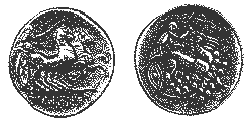
This fashion is not unlike some styles of modern art.
Metal was a common medium for Celtic art, while stone and wood seem to have been reserved for religious purposes. Most of the Celtic metalwork we have consists of weapons, drinking vessels, and personal ornaments, reflecting the interests of the powerful warrior class. Weapons were made of iron, but the smiths reverted to bronze, silver and gold for the finer accoutrements. [29] It has been suggested that the use of gold was specifically reserved for holy objects. [42]
Metalsmiths were a highly specialised and revered class in society. Welsh laws stipulated that the smith should have the first drink when feasting. [31]
The Celts certainly appreciated vivid colours in their art. As early as the La Téne period artists were affixing coral balls or plaques on their work, and by the third century BCE the Irish were melting red glass into decorative swirls and spirals. True enamelling in yellow was introduced by the Romans and adapted by the Celtic artists. Soon the Celts discovered the technique of millefiori, by which multiple colours of glass could be set with enamel. [14]
Pre-Christian Celtic art is markedly non-narrative, and very seldom depicts people. Very few full human forms are known, none of them decisively female, possibly due to some taboo on such representations. Yet the human head appears exceedingly frequently and prominently. This is undoubtedly due to the powerful spiritual connotations of the human head. [29]
Celtic art should be viewed as basically religious in nature, in both the pre-Christian and Christian eras. The spiritual perspective of the Celts comes strongly through in their art: the relationship between man and nature, the awe of the omnipresent and often terrifying gods, the thin veil between this world and the 'Otherworld'. Strange half-human, half-plant or -animal forms abound, and visual imagery is enhanced with the presence of beasts, real and mythological, some of which contribute symbolic or associative significance.
Following the adoption of Christianity in the fifth century C.E., much of the pagan symbolism continued, but with Christian variations. In the seventh to ninth centuries, the church became one of the primary patrons of the arts, and scribes in the Irish monasteries produced religious texts with elaborate Celtic ornamentation.
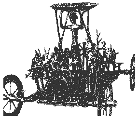
This bronze cult wagon was found in a barrow, the burial place of a man who was cremated, along with axe, spear and three horse bits.
The central figure on the wagon is a female, naked except for earrings and a belt, who supports a small offering dish. The other figures are placed symmetrically, front and back, and were all separately cast and attached to the base.
On the sides of the wagon are pairs of mounted warriors with spears, shields and pointed helmets. On the ends are two figures, probably female, grasping a stag. Behind them are a male and female pair, women with earrings, and ithyphallic men with axes.
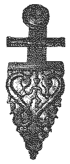
This belt hook is ornamented by a central human figure, supported by a lyre ending in a horse's head. Waterbirds swim along the margin. The arrangement might symbolise man's power over beast. [4,29]
A number of similar triangular belt hooks, ornamented by tendrils and intertwining serpentine figures, have been found in this region from this time period.
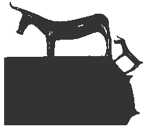
This artifact is a fine bronze bowl, whose handle is a cow. Amber beads found in the grave suggest that it was probably a woman's burial.
Cattle figurines may have been placed in graves as a substitution for real animal sacrifices. Representations of cattle can be expected in a herding society and have a long history in Celtic art.
Hallstatt cattle figurines depict the local species of cattle at that time, bos primigenius. The squared snout and limbs are typical of Hallstatt art and remain firmly throughout Celtic art. [4,29]
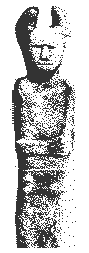
This sandstone pillar stands more than six feet tall. Its base was cut to fit into a slot, suggesting its makers had familiarity with woodworking techniques. There are faces on both sides of the statue, earning it the name "Janus."
The Celts commonly adorned human heads with "leafcrowns," S-curves and lotus-buds. It is impossible for us to interpret their significance with certainty, but they may be an earlier or alternative form of horns, which were used to emphasise the power of the represented deity. [13,17,29]
The idea of pillar stones may have been borrowed from the Etruscans of Northern Italy. [29]
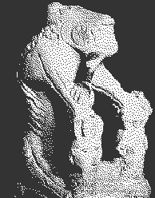
This imposing monster from Noves in the Bouches-du-Rhône, is usually interpreted as a lion, although it may be a wolf. A dismembered limb hangs from its snarling mouth, and clutched in each front claw is a human skull. The statue stands nearly four feet tall.
This and a number of Celtic shrines in the Rhône delta may be associated with the cult of the severed head, as evidenced by suggestive sculptures and pillars.
The Tarasque, and other similar pieces, may represent the triumph of death over human life. [4,29]
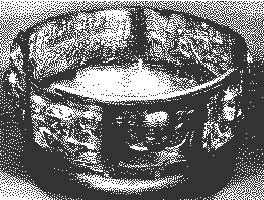
The Gundestrup Cauldron may well be the single most important Celtic artifact ever found. We can find almost all of the known elements from Celtic mythology and religion on this cauldron.
There seem to be seven deities on the cauldron, four male and three female.
The silver cauldron was carefully disassembled and deposited in a peat-bog in Denmark, probably as a votive offering. Bogs may have well been sacred or holy sanctuaries, judging from the number of religious objects and sacrifices found in bogs.
To make the cauldron, images were carved into metal or bone dies, and the plates were hammered into the dies from behind. This technique is called repoussé. More details were added to the surface using punches and engraving tools.
But there are several arguments against the cauldron's actually being made by Celts. The ivy-leaf fillins, punch-dotting and ridging of human clothing strongly recall the metalwork of Dacians and Thracians in Romania, Bulgaria and eastern Hungary. Silver was rarely used by the Celts, except for coinage, but was commonly used by other people from eastern areas. Finally, silver coinage from Bratislava depicts many of the same animals that the cauldron does. [29]
It is possible, therefore, that the cauldron was constructed for the Cimbri, a widely roaming tribe of Celtic warriors, by Thracian silversmiths, whom they might have captured when they plundered eastern Europe. They then may have carried the cauldron with them on the raids of Gaul from 113 BCE onwards. [29]
The Cauldron is made of solid and gilded silver, fourteen inches high and twenty eight inches in diameter, with a capacity of over 34 gallons. It is made of five inner and seven outer plates.
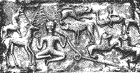
This is the famous Horned God plate. The crosslegged man wears antlers, and is holding a torc and a ram-horned snake. The adjacent stag faces him, and a host of animals, such as a bull (right, above) a boar (right, adjacent) and a boy on a dolphin (upper right corner), surround him. These elements strongly identify him as Cernunnos, lord of animals.
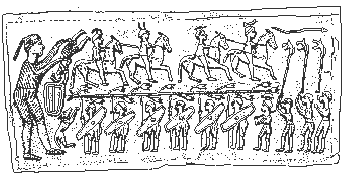
This is one of the most widely interpreted scenes on the cauldron.
First, note the procession of warriors, wearing their jockey-cap helmets, some of which bear crests of boars or birds of prey. The horse- men use spurs and circular harness mounts. The footmen carry animal-headed war trumpets and shields.
The shield bosses and the circular harness mounts are of clearly Celtic late La Téne type. [29]
The footmen carry a tree, which may be intended as a votive offering. Branches and saplings have been found in wells, probably as offerings to underworld powers. [13]
At the top right, the horsemen are being led by the ram-horned snake. [4]
The vat on the far left has a number of interpretations. Some claim it is a cauldron of rebirth or plenty,such as is found in many of the Celtic myths, and that a dead warrior is being immersed in it to be brought back to life. Others claim that the warrior is instead being sacrificed in the vat. [4]
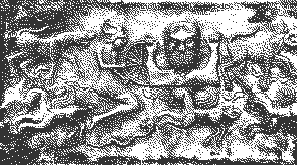
This plate seems to depict a wheel being offered by human, wearing a bull-horned helmet and a short tunic, to the bust- figure of a bearded being.
In Celtic iconography, the wheel is associated with the sky and solar deity, sometimes named Taranis. From the symbols associated with him on carvings, he seems to preside over not only sun and sky, but war, fertility and death as well. [17]
It is interesting that griffins are depicted here, as these were Greek monsters associated with the sun god Apollo. [4]
About two hundred stone monuments depict the Celtic sky and solar god. He occurs as a wheel-bearing being, but sky- symbolism can also be suggested by thunder- symbolism. The theme of the triumph of light over darkness and sky/life over earth/death is frequent and important. [17]
The swastika is also a common solar symbol, whose form suggests movement, like that of the wheel. We can infer the link between these symbols because of their common mutual occurrence. [17]
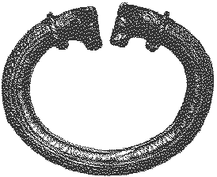
Warriors wore torcs around their necks, and Classical writers often depict them as wearing nothing else to battle.
The torc probably had a profound spiritual association, and most Celtic deities are depicted wearing them. Some scholars assert that the torc was an exclusively male ornament [34], although Dio Cassius described the great Warrior-Queen Boudica as wearing a "great twisted golden necklace."
The use of the torc was borrowed from the east, and the design of some Celtic torcs suggest being crafted after Persian models. [34]
Garrotes are ropes or wires used by the Celts and other people to kill sacrificial victims. The similarity between torcs and garrotes has lead some scholars to ponder the connection between the two. [42]
The terminals of this torc depict bulls, also wearing torcs. This mighty silver torc, like the Gundestrup Cauldron, shows signs of eastern influence. It weighs over thirteen pounds, although this is mostly due to the iron core of the torque.
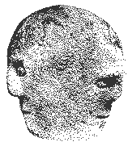
This is a three-faced head from Corleck, Co. Cavan in Ireland, just over 12 inches in height.
Triplism is an extremely common theme in ancient Celtic religion, where triple goddesses and gods are commonplace.
A number of sculptures of native triple-headed or triple-faced Celtic gods were produced in Roman Gaul, but this is the only work of this kind found in Ireland.
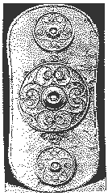
This bronze shield was found in the river Thames at Battersea, London, England. It was apparently thrown into the Thames by a Celtic warrior aristocratic as a votive sacrifice to the water gods.
The bronze plate, produced in high relief repoussé, once covered a wooden or leather shield. There are small, face-like details between center and outer roundels, and each tiny circle is filled with a swastika and coloured by red glass or enamel inlays.
The vertical and horizontal symmetry, outer roundel form and use of glass inlay have led some to suggest that the shield was produced during the Roman occupation of Britain. [29]
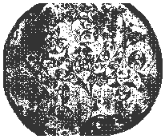
Mirrors were widespread in the Roman world, but rarely found in the continental Celtic world. About fifteen mirrors have been found associated with burials in England, apparently always with adult females.
The "Mirror Style" of southern England is characterised by compass layout and the extensive use of basketry hatching. It is found not only on mirrors, but also on scabbards and spears from Cornwall to East Anglia as well.
With the exception of some early iron mirrors, the mirrors are of bronze. They are decorated in the back, usually with hatched basketry and often in a three-part, lyre- shape design.
They were probably hung upside down when not used, for in this position faces may be seen on the back of some of these mirrors. [29]
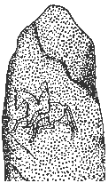
Pictish art, found engraved on rocks all over the north of Scotland, frequently displays animals and geometric designs, both of which had some symbolic meaning lost to us now.
That so many examples of rock art survived is a testimony to the amount of work the Picts must have produced.
Many of the symbols can be traced to earlier Celtic origins, as many of the Picts (probably one of the two Pictish groups) were Celtic in nature. [41,52]
The oldest Pictish stones have symbols carved directly into the natural, unsmoothed face of the stone. The style was later refined into carefully dressed slabs bearing carvings in relief. The Christian cross was the dominant motif in the later style.
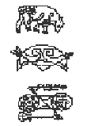
The Picts carved symbols into small objects and cave walls, and, most importantly, upright stones. Some 200 stones have survived, and more are found each year.
Many different symbols have been found, some occurring more frequently than others. Their uniformity and wide distribution suggests that they were a means of communication throughout Pictland, independent of tribal identity.
Pictish representations of stags and boars probably represent fertility and battle, respectively, as they did for the Celts. But the symbols probably also had connotations of cultural significance. Symbols usually occur in pairs, often accompanied by a comb or mirror below. Many of the symbol stones were erected near burials, suggesting that the depictions were memorial in nature.
Another theory is that the stones are public statements of marriage alliances between lineages, the comb and mirror representing the marriage endowment.
A number of the Pictish symbol stones bear ogam inscriptions, but the Pictish language remains undecipherable. Whatever the message, it probably echoes the message of the Pictish symbols.
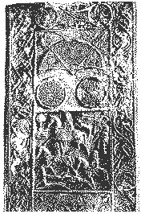
With Christianity came the Christian symbol of the cross, which the Picts incorporated into their art. Originally, simple stone crosses were used to distinguish Christian graves from those of pagans. Relief carving decorates later cross slabs, the earliest of which date from the eighth century CE. Although not of Pictish origin, crosses were also combined with Celtic art forms in the Irish High Crosses.
Pictish stone art has strong stylistic similarities to the illuminated gospels such as the Book of Kells, with its elaborate knotwork and zoomorphics. A case has been made that the Book of Kells was made in a monastery somewhere in eastern Pictland. [41]
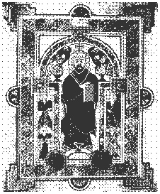
The styles and symbols from Celtic metalwork and Pictish stonework were combined in the illuminated gospels produced in the monasteries of the early Christian era.
The Book of Kells is generally regarded as the finest of the form, and includes approximately 30 pages covered entirely with knotwork, zoomorphics, spirals and highly stylised portraits [5].
The 13" by 9.5" book is comprised of 340 pages; nearly every one has some colour or design. Illuminated capitals in bright reds, greens, yellows and blues are scattered through the Latin text, which was calligraphed in a hand known as "insular majuscule," a Celtic adaptation of the Roman alphabet [5].
The manuscript derives its name from the Abbey of Kells, where the book was kept from the ninth century until 1541 [5]. However, whether or not the book was actually produced at Kells is a subject of much debate. Many scholars favour a Scottish or Northumbrian origin, perhaps from the monasteries of Lindisfarne or Iona [29].
The style closely resembles that of other manuscripts, such as the eighth century Book of Lindisfarne from Northumbria and the Book of Durrow, a more primitive, seventh century work from Ireland. The resemblance is not surprising because gospel books circulated among the monasteries, where scribes copied the text and adapted the illuminations. Texts were copied word-for-word, mistakes and all [29].
The monasteries provided an isolated lifestyle for the scribes, who thought of their intricate illuminations as a tribute to God. Some minute details of the manuscripts can scarcely be seen by the naked eye; the artists may have used a magnifying crystal to produce such fine designs [29].
The monasteries were also centres of learning, not only for Ireland but for Europe as well. Irish monks travelled to Europe to help rekindle the church, left in chaos in the aftermath of the Roman Empire.
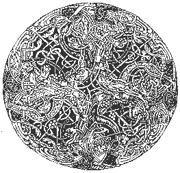
An interesting paradox of the manuscript illuminations lies in the contrast between motion and rigidity. The knotwork writhes with "living" zoomorphics, yet a definite form is imposed on the animals' squirmings by boxes, lines, circles.
The design pictured here from the Book of Kells originally measured just one and a third inches in diameter and intertwines four beasts, eight birds, four reptiles, and four plants [3].
You can see the heads of the beasts near the center, and the leaves of the plants in the darker regions. The bodies of peacock-like birds form the outmost rim.
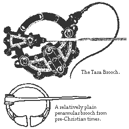
Just as the Book of Kells is a striking example of the scribal art, so the Tara Brooch is one of the greatest treasures of Irish metalwork.
The silver-gilt brooch has some seventy-six different designs on it, and is ornamented on both front and back. [1] Its detail includes casting, enamel and filigree; amber, glass and gold; knotwork, zoomorphics and spirals. [29]
More ornamental than functional (a sign of the wealth of the owner), the eighth-century Tara Brooch is of the "annular" style. An annular brooch consists of a circle of metal, with a freely-swinging pin attached.
For function, however, a penannular style is to be preferred. The metal circle is open-ended on a penannular, so that the pin may be passed through the ring, locking the fabric into the brooch.
Penannulars date to pre-Roman times. Annulars became fashionable in the eighth century, but the form returned to the more functional penannular after the leisure-disrupting Viking raids in the ninth and tenth centuries. [14]
Despite its name, however, the Tara brooch has nothing to do with the royal seat of Tara; the name is the invention of romantic 19th century historians.